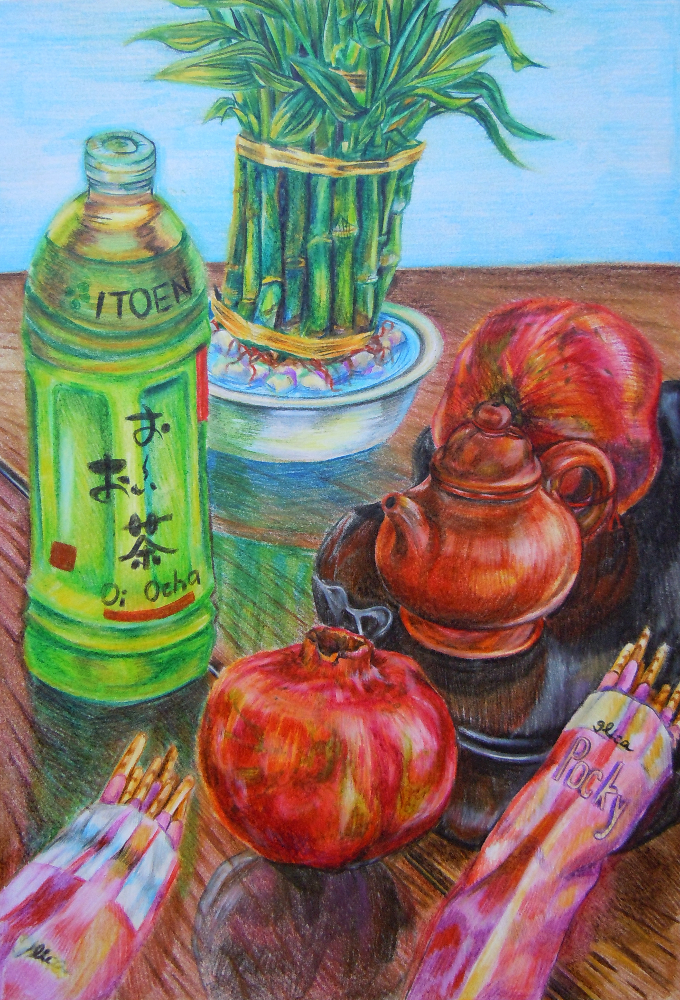
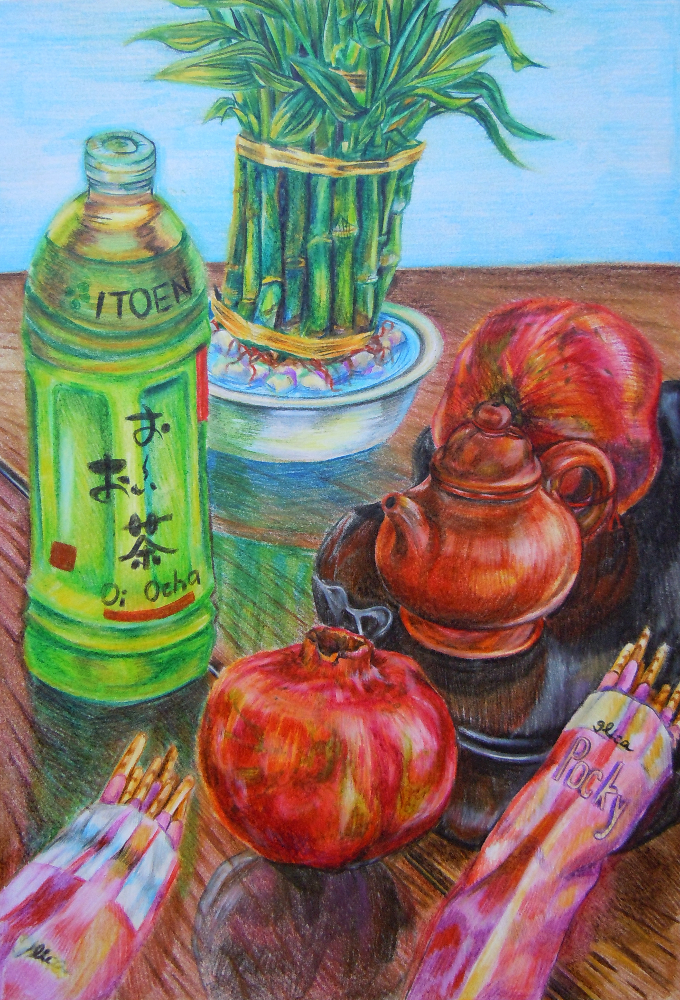

Art Installation in Sungod
Giant Glowing Tetris Blocks

This is a featured art installation at Sun God festival at UC San Diego, 2014. Sylvia led the project to make human-size tetris blocks that can light up at night. The tetris blocks were made out of cardboard boxes, colored with spray paints and sealed with cellophane paper on the side. The blocks were also incorporated with LED light strips. This work was commissioned by Associated Student Concerts and Event.
2.Chinese Impression Series
 


This is a series of paintings depicting the Chinese culture that Sylvia has exposed to in her early childhood.
Architecture_ A Study on Spiral


Sylvia has attended the Cornell Summer School of Architecture in 2012. These are some of her resulted work.
Tools and Composition